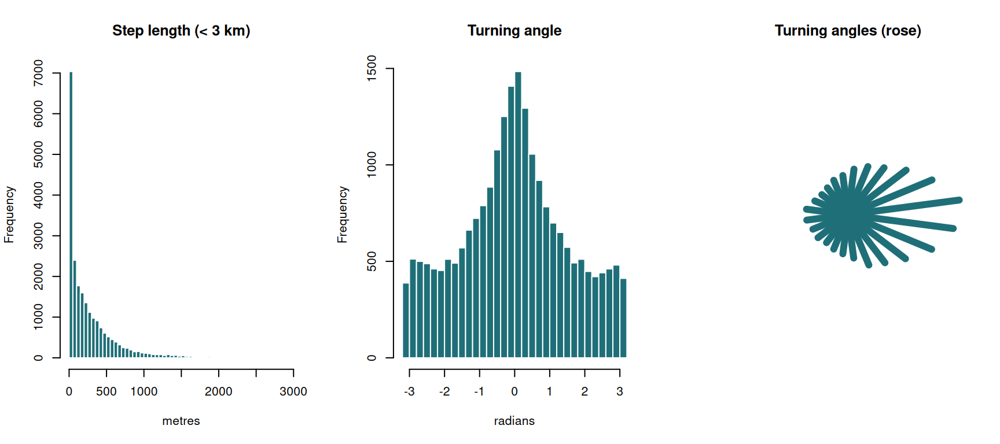
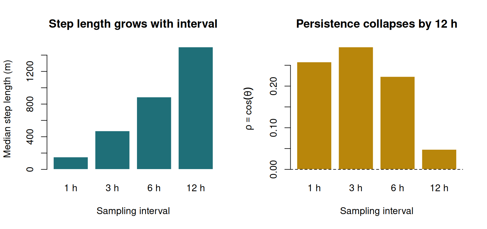
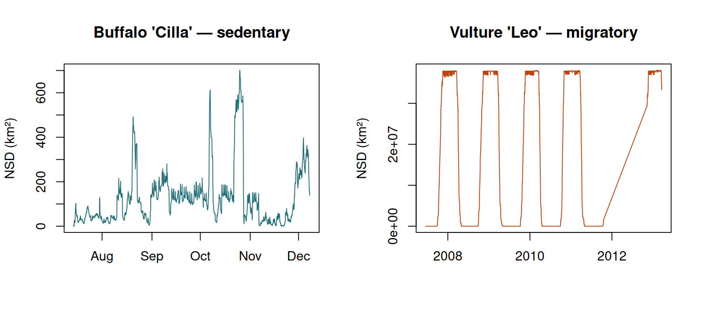
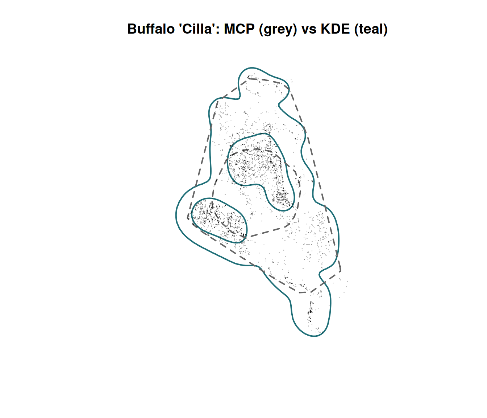
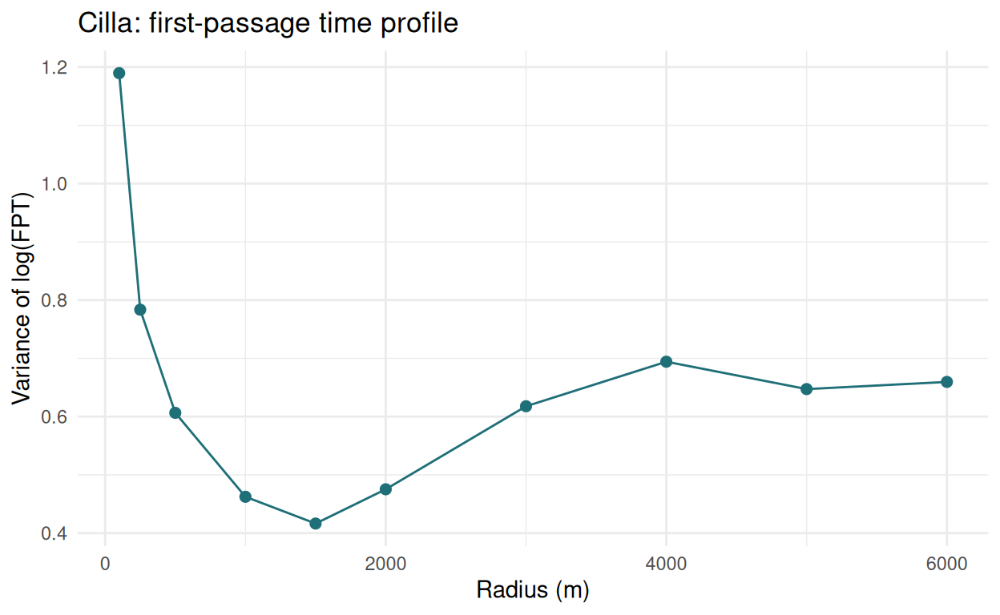

Exercise 4 — Steps, angles, displacement and home range
Class 4 · Theme 1
Goals. Compute and plot step lengths, turning angles and speeds; demonstrate that they depend on the sampling interval; use NSD to diagnose movement strategy; estimate home ranges with MCP, KDE and AKDE; and show yourself the autocorrelation problem.
Time: ~55 minutes. Packages: amt, dplyr, tidyr, lubridate, ctmm.
Setup — the cleaned track from Class 3
clean <- read.csv("data/buffalo_kruger.csv.gz") |>
transmute(id = individual.local.identifier,
t = as.POSIXct(timestamp, tz = "UTC"),
x = location.long, y = location.lat) |>
filter(!is.na(x), !is.na(y)) |>
distinct(id, t, .keep_all = TRUE)
trk <- make_track(clean, x, y, t, id = id, crs = 4326) |>
transform_coords(crs_to = 32736)
resample_by_id <- function(tr, rate, tol) {
tr |>
nest(data = -id) |>
mutate(data = lapply(data, \(d) {
d |> track_resample(rate = rate, tolerance = tol) |>
filter_min_n_burst(min_n = 3)
})) |>
unnest(cols = data)
}
trk_hr <- resample_by_id(trk, hours(1), minutes(10))
nrow(trk_hr)
#> [1] 22828Task 1 — Steps, angles and speeds
st <- trk_hr |>
nest(data = -id) |>
mutate(data = lapply(data, steps_by_burst)) |>
unnest(cols = data)
st <- st |> mutate(speed_kmh = (sl_ / 1000) / as.numeric(dt_, units = "hours"))
st |>
summarise(n = n(),
median_sl = round(median(sl_)),
q99_sl = round(quantile(sl_, 0.99)),
max_sl = round(max(sl_)))
#> # A tibble: 1 × 4
#> n median_sl q99_sl max_sl
#> <int> <dbl> <dbl> <dbl>
#> 1 22588 152 1948 63103Your turn
1a. Plot the distribution of step lengths and of turning angles. 1b. What does the turning-angle distribution tell you?
par(mfrow = c(1, 3))
hist(st$sl_[st$sl_ < 3000], breaks = 60, col = "#1f6f78", border = "white",
main = "Step length (< 3 km)", xlab = "metres")
hist(st$ta_, breaks = 40, col = "#1f6f78", border = "white",
main = "Turning angle", xlab = "radians")
# A rose diagram respects the circular nature of the data
ta <- st$ta_[!is.na(st$ta_)]
brk <- seq(-pi, pi, length.out = 25)
cnt <- table(cut(ta, brk))
mid <- (head(brk, -1) + tail(brk, -1)) / 2
plot(0, 0, type = "n", xlim = c(-1, 1), ylim = c(-1, 1), asp = 1,
axes = FALSE, xlab = "", ylab = "", main = "Turning angles (rose)")
r <- as.numeric(cnt) / max(cnt)
for (i in seq_along(mid)) {
lines(c(0, r[i] * cos(mid[i])), c(0, r[i] * sin(mid[i])),
col = "#1f6f78", lwd = 6)
}
Step lengths are strongly right-skewed: most steps are short (the animal is resting or grazing), with a long tail of directed movement. This is why step lengths are modelled with a gamma or exponential distribution, never a normal one.
Turning angles peak sharply at 0 and again — more weakly — near ±π. The peak at 0 is directional persistence: an animal that was heading somewhere tends to keep heading there. The bumps near ±π are reversals, typically an animal turning back within a patch, plus some GPS error at very short steps.
A uniform turning-angle distribution would mean no directional memory at all — a simple random walk. Real animals are never that.
Task 2 — Scale dependence, demonstrated
Resample the same animals at four intervals and compare.
For turning angles we need a circular summary. The standard one is the mean resultant length \(\rho = \overline{\cos\theta}\): it is 1 for perfectly straight movement and 0 for a uniform (memoryless) distribution.
rates <- list(`1 h` = hours(1), `3 h` = hours(3),
`6 h` = hours(6), `12 h` = hours(12))
scale_tab <- lapply(names(rates), function(nm) {
tr <- resample_by_id(trk, rates[[nm]], minutes(15))
s <- tr |> nest(data = -id) |>
mutate(data = lapply(data, steps_by_burst)) |> unnest(cols = data)
ta <- s$ta_[!is.na(s$ta_)]
data.frame(rate = nm, n_steps = nrow(s),
median_sl_m = round(median(s$sl_)),
rho = round(mean(cos(ta)), 3),
frac_straight = round(mean(abs(ta) < pi / 4), 3))
}) |> bind_rows()
scale_tab
#> rate n_steps median_sl_m rho frac_straight
#> 1 1 h 22596 152 0.258 0.416
#> 2 3 h 7567 472 0.294 0.423
#> 3 6 h 4002 887 0.223 0.393
#> 4 12 h 2011 1500 0.048 0.290For reference, a memoryless walk would give rho = 0 and frac_straight = 0.25.
Your turn
2a. What happens to median step length as the interval grows? 2b. What happens to directional persistence — and is it monotonic?
Step length increases, from ~150 m at 1 h to ~1.5 km at 12 h — but far less than proportionally. Twelve times the interval buys only about ten times the displacement, because the path doubles back on itself. If movement were perfectly directed the relationship would be linear; the shortfall is the tortuosity.
Directional persistence collapses, but not smoothly:
par(mfrow = c(1, 2))
barplot(scale_tab$median_sl_m, names.arg = scale_tab$rate, col = "#1f6f78",
border = "white", ylab = "Median step length (m)",
xlab = "Sampling interval", main = "Step length grows with interval")
barplot(scale_tab$rho, names.arg = scale_tab$rate, col = "#b8860b",
border = "white", ylab = expression(rho == bar(cos(theta))),
xlab = "Sampling interval", main = "Persistence collapses by 12 h")
abline(h = 0, lty = 2)
Persistence holds up to about 6 hours and has essentially vanished at 12 hours (\(\rho \approx 0.05\), frac_straight ≈ 0.29 against the uniform 0.25). So for these buffalo the timescale of directional memory sits somewhere between 6 and 12 hours.
The non-monotonic bit is the interesting part. \(\rho\) is lower at 1 h than at 3 h. That is not biology — it is measurement. At an hourly interval many steps are only a few tens of metres (a resting or grazing animal), and when the step is comparable to the GPS error the direction of that step is largely noise. Randomised directions drag \(\rho\) down.
Two practical consequences:
- A correlated random walk fitted at 12 h would report almost no correlation, and you would wrongly conclude the animal moves at random.
- At very fine intervals, turning angles are contaminated by positional error. This is why step-selection analyses (Class 8) are usually run at an interval where typical step length comfortably exceeds GPS error.
Task 3 — Net squared displacement
nsd_of <- function(d) {
d <- d[order(d$t_), ]
data.frame(t = d$t_, nsd = (d$x_ - d$x_[1])^2 + (d$y_ - d$y_[1])^2)
}
par(mfrow = c(1, 2))
cil <- nsd_of(trk_hr[trk_hr$id == "Cilla", ])
plot(cil$t, cil$nsd / 1e6, type = "l", col = "#1f6f78",
xlab = "", ylab = "NSD (km²)", main = "Buffalo 'Cilla' — sedentary")
vul <- read.csv("data/vulture_leo.csv.gz") |>
transmute(t = as.POSIXct(timestamp, tz = "UTC"),
x = location.long, y = location.lat) |>
filter(!is.na(x)) |> distinct(t, .keep_all = TRUE) |> arrange(t)
vt <- make_track(vul, x, y, t, crs = 4326) |> transform_coords(crs_to = 6933)
v <- nsd_of(vt)
plot(v$t, v$nsd / 1e6, type = "l", col = "#c1440e",
xlab = "", ylab = "NSD (km²)", main = "Vulture 'Leo' — migratory")
Cilla rises quickly to a ceiling and stays there, oscillating. That is the signature of a sedentary animal with a bounded home range: once it has explored its range, it cannot get further from the start.
Leo shows six clean cycles: a sigmoid rise (autumn migration), a plateau (wintering), a sigmoid fall (spring migration), a plateau (breeding). This is the textbook migratory NSD profile.
Note the CRS: Leo spans 47° of latitude, so no UTM zone works. EPSG:6933 is a global equal-area projection — appropriate for continental-scale distances and areas.
NSD is a one-line diagnostic and it should be the first plot you make for any new track. It tells you immediately whether a home range is a meaningful thing to estimate.
Task 4 — MCP and KDE
cilla <- trk_hr |> filter(id == "Cilla")
mcp95 <- hr_mcp(cilla, levels = c(0.5, 0.95))
hr_area(mcp95) |> mutate(area_km2 = round(area / 1e6, 1))
#> # A tibble: 2 × 4
#> level what area area_km2
#> <dbl> <chr> <dbl> <dbl>
#> 1 0.95 estimate 263530861. 264.
#> 2 0.5 estimate 75532553. 75.5
kde95 <- hr_kde(cilla, levels = c(0.5, 0.95))
hr_area(kde95) |> mutate(area_km2 = round(area / 1e6, 1))
#> # A tibble: 2 × 4
#> level what area area_km2
#> <dbl> <chr> <dbl> <dbl>
#> 1 0.95 estimate 292203479. 292.
#> 2 0.5 estimate 61180281. 61.2plot(hr_isopleths(kde95)$geometry, border = "#1f6f78", lwd = 2,
main = "Buffalo 'Cilla': MCP (grey) vs KDE (teal)")
plot(hr_isopleths(mcp95)$geometry, border = "grey40", lwd = 2, lty = 2, add = TRUE)
points(cilla$x_, cilla$y_, pch = 16, cex = 0.2,
col = adjustcolor("black", 0.25))
Your turn
4a. Which is larger, and why? 4b. What does the 50% contour represent?
The MCP is convex by construction, so it swallows any concavity in the animal’s actual use — here, areas it moved around rather than through. The KDE can be concave and can even be disjoint, so it hugs the used area more tightly.
The 50% contour is conventionally called the core area: the smallest region containing half the probability mass of the utilisation distribution. It is a convention, not a biological threshold — but it is far more informative than the 95% boundary, because it shows where the animal actually concentrates.
bind_rows(
hr_area(mcp95) |> mutate(method = "MCP"),
hr_area(kde95) |> mutate(method = "KDE")
) |>
transmute(method, level, area_km2 = round(area / 1e6, 1)) |>
pivot_wider(names_from = method, values_from = area_km2)
#> # A tibble: 2 × 3
#> level MCP KDE
#> <dbl> <dbl> <dbl>
#> 1 0.95 264. 292.
#> 2 0.5 75.5 61.2Task 5 — Show yourself the autocorrelation problem
If KDE assumed independence and our fixes are autocorrelated, then thinning the data should change the answer systematically. Let us check.
thin_every <- function(tr, k) tr[seq(1, nrow(tr), by = k), ]
thin_tab <- lapply(c(1, 2, 6, 12, 24, 48), function(k) {
d <- thin_every(cilla, k)
if (nrow(d) < 30) return(NULL)
a <- hr_area(hr_kde(d, levels = 0.95))
data.frame(every = paste0(k, " h"), n = nrow(d),
kde95_km2 = round(a$area / 1e6, 1))
}) |> bind_rows()
thin_tab
#> every n kde95_km2
#> 1 1 h 3518 292.2
#> 2 2 h 1759 303.6
#> 3 6 h 587 330.8
#> 4 12 h 294 345.2
#> 5 24 h 147 378.9
#> 6 48 h 74 400.2Your turn
5a. What happens to the KDE area as you thin? 5b. What would happen if the fixes were genuinely independent?
plot(thin_tab$n, thin_tab$kde95_km2, type = "b", pch = 16, log = "x",
col = "#1f6f78", lwd = 2,
xlab = "Number of fixes (log)", ylab = "95% KDE area (km²)",
main = "KDE area depends on how many fixes you kept")
The estimate is not stable — and it drifts in a consistent direction. The 95% KDE area grows steadily as we thin, from roughly 290 km² at hourly sampling to about 400 km² at 48-hourly, a ~37% difference for the same animal over the same period.
If the fixes were independent draws from a fixed utilisation distribution, the KDE area would converge to a constant as \(n\) grows — more data, less noise, same answer. Instead the denser data give systematically smaller ranges, because adding more autocorrelated fixes adds almost no new information about the utilisation distribution while the bandwidth selector behaves as though it does. The effective sample size is far smaller than n.
This is precisely the problem AKDE was built to solve — and precisely why a 95% KDE from 8,000 hourly fixes is not comparable to one from 60 VHF fixes.
Task 6 — AKDE with ctmm
ctmm fits a continuous-time movement model first, then uses its autocorrelation structure to weight the kernel estimate.
Model selection is genuinely slow — minutes, not seconds. We thin to 6-hourly fixes here so it finishes during class. For real work, use the full track and be patient.
library(ctmm)
cil6 <- thin_every(cilla, 6)
mb <- data.frame(
timestamp = cil6$t_,
location.long = NA, location.lat = NA,
individual.local.identifier = "Cilla"
)
# ctmm wants geographic coordinates; convert the UTM track back
ll <- sf::st_coordinates(
sf::st_transform(sf::st_as_sf(cil6, coords = c("x_", "y_"), crs = 32736), 4326)
)
mb$location.long <- ll[, 1]
mb$location.lat <- ll[, 2]
tel <- as.telemetry(mb, timeformat = "auto")
guess <- ctmm.guess(tel, interactive = FALSE)
fit <- ctmm.select(tel, guess, verbose = FALSE)
summary(fit)
#> $name
#> [1] "OUF anisotropic"
#>
#> $DOF
#> mean area diffusion speed
#> 15.55335 26.82906 232.67046 163.80052
#>
#> $CI
#> low est high
#> area (square kilometers) 257.316665 391.034715 552.287368
#> τ[position] (days) 3.169814 4.953404 7.740585
#> τ[velocity] (hours) 1.487567 1.919526 2.476918
#> speed (kilometers/day) 9.828279 10.643243 11.457383
#> diffusion (square kilometers/day) 7.402496 8.453952 9.574215Your turn
6a. Compare the AKDE estimate with the KDE estimate on the same thinned data. 6b. What does the confidence interval tell you?
Two things to notice.
The point estimate differs. AKDE corrects for the autocorrelation that classical KDE ignores, and for this animal it typically comes out larger.
AKDE gives you a confidence interval, and it is wide. That width is the honest statement of how much your data actually constrain the answer. A single number from classical KDE hides exactly that uncertainty — which is why it is so easy to over-interpret small differences between individuals or between years.
The model summary is also worth reading: ctmm.select() chose a movement model (OU, OUF, IID…), and the “area” row of summary(fit) reports the range-residency estimate. If the selected model has no range residency, the animal is not exhibiting home-range behaviour and an AKDE area is not a meaningful quantity — the software will tell you, which classical KDE never does.
Self-check
You resample a track from hourly to 6-hourly and the mean turning angle distribution becomes almost uniform. What does this tell you?
Directional persistence is a short-term property of movement. At a six-hour interval the animal has changed activity several times, so the direction of one step carries almost no information about the next, and turning angles approach uniform.
This is a statement about the timescale of the behaviour relative to your sampling, not about the animal changing. It also matters practically: a correlated random walk fitted at 6 hours will report almost no correlation, and you would wrongly conclude the animal moves at random.
ctmm.select() chooses an IID (independent, identically distributed) model for your track. What does that mean for your home-range analysis?
An IID model says the data show no detectable correlation between successive positions. For a modern GPS track that is nearly always a symptom, not a finding: fixes so far apart in time that the movement process between them is unresolved.
In that regime AKDE reduces to something close to classical KDE — it has no autocorrelation to correct for. The estimate is not wrong, but you should say plainly that the sampling could not resolve the movement process, and be cautious comparing it with estimates from denser data.
Before Class 5
- Read Fleming et al. (2015), Ecology 96:1182–1188.
- Have a look at the two rasters in
data/:kruger_elevation.tifandkruger_landcover.tif. We use both next week.